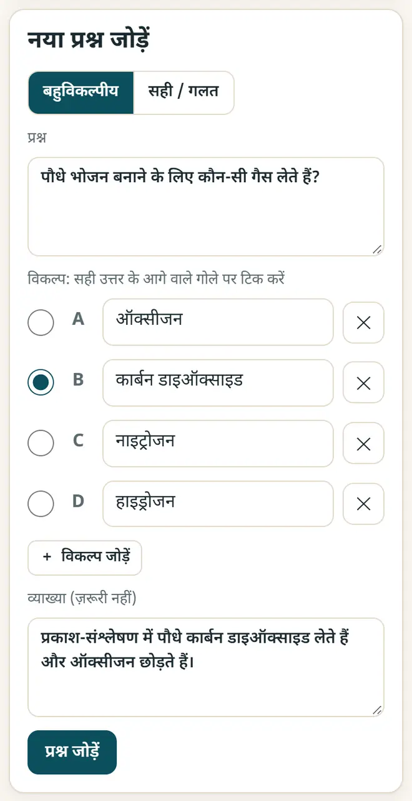
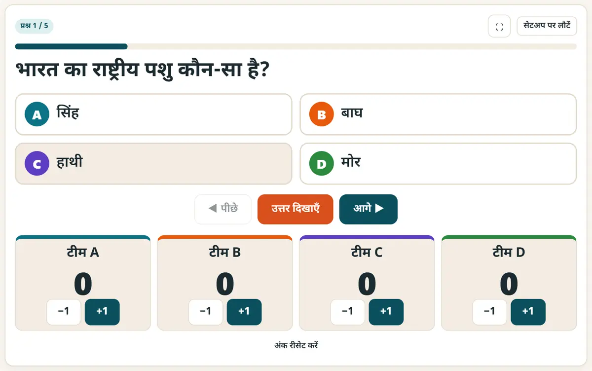

अपनी कक्षा के लिए ऑनलाइन क्विज़ कैसे बनाएँ (मुफ़्त)
एक क्विज़, इस्तेमाल के तीन तरीक़े: प्रोजेक्टर पर टीमों का मुक़ाबला, विद्यार्थियों के फ़ोन पर लाइव क्विज़, और होमवर्क के लिए प्रैक्टिस लिंक। किसी विद्यार्थी को अकाउंट या ईमेल की ज़रूरत नहीं।
छोटा जवाब
क्विज़ मेकर और प्लेयर खोलें, सवाल टाइप करें (या Excel से CSV फ़ाइल इम्पोर्ट करें) और खेलने का तरीक़ा चुनें: प्रोजेक्टर पर टीमों के लिए “क्लास क्विज़”, WhatsApp प्रैक्टिस लिंक के लिए “शेयर और प्रिंट”, या क्विज़ को लाइव क्लास क्विज़ में इम्पोर्ट करें, जहाँ विद्यार्थी apnipathshala.ai/join पर 6 अंकों का कोड और एक निकनेम डालकर जुड़ते हैं।
6 स्टेप में क्विज़ बनाएँ और चलाएँ
-
नई क्विज़ शुरू करें
क्विज़ मेकर और प्लेयर खोलें और “नई क्विज़” दबाएँ। उसे एक नाम दें, जैसे “कक्षा 8 विज्ञान: प्रकाश”। पहले आज़माना हो तो एक नमूना क्विज़ पहले से मौजूद है।
-
सवाल जोड़ें
“बहुविकल्पीय” या “सही / गलत” चुनें, सवाल और विकल्प टाइप करें, सही जवाब पर टिक करें और एक लाइन की व्याख्या जोड़ें। “प्रश्न जोड़ें” दबाएँ। सवाल पहले से Excel में हैं? उन्हें question, option1 … option6, correct और explanation कॉलम के साथ CSV में सेव करके इम्पोर्ट करें।

क्विज़ मेकर: सवाल लिखें, सही जवाब पर टिक करें और व्याख्या जोड़ें। -
कक्षा में टीमों के साथ खेलें
प्रोजेक्टर पर “क्लास क्विज़” टैब खोलें। कक्षा को A–D टीमों में बाँटें, एक बार में एक सवाल दिखाएँ, टाइमर ख़त्म होने तक टीमों को चर्चा करने दें, फिर जवाब दिखाएँ और सही टीमों को एक-एक पॉइंट दें।

प्रोजेक्टर पर टीमों के स्कोर के साथ क्लास क्विज़। -
WhatsApp पर प्रैक्टिस लिंक भेजें
“शेयर और प्रिंट” में क्विज़ का लिंक कॉपी करके कक्षा के ग्रुप में भेजें। पूरी क्विज़ लिंक के अंदर ही होती है, इसलिए किसी लॉगिन के बिना चलती है। आप सवाल प्रिंट भी कर सकते हैं; उत्तर-कुंजी अलग पेज पर आती है।
-
विद्यार्थियों के फ़ोन पर लाइव क्विज़ चलाएँ
Kahoot जैसी लाइव क्विज़ के लिए लाइव क्लास क्विज़ खोलें और Google से साइन इन करें (सिर्फ़ शिक्षक साइन इन करते हैं)। अपनी क्विज़ इम्पोर्ट करें और “लाइव चलाएँ” दबाएँ। विद्यार्थी apnipathshala.ai/join खोलकर 6 अंकों का कोड और एक निकनेम डालते हैं और फ़ोन पर जवाब देते हैं।
-
रिज़ल्ट देखें
सही जवाब पर 500 से 1000 पॉइंट मिलते हैं: जितना जल्दी, उतने ज़्यादा। हर सवाल के बाद लीडरबोर्ड दिखता है, और रिज़ल्ट CSV फ़ाइल में डाउनलोड हो जाते हैं। रिज़ल्ट 30 दिन बाद मिट जाते हैं।
अच्छी क्लास क्विज़ के लिए सुझाव
- एक पीरियड के लिए 10 से 15 सवाल रखें, और हर सवाल में एक ही बात पूछें।
- हर जवाब की छोटी व्याख्या लिखें: ग़लती के ठीक बाद विद्यार्थी सबसे ज़्यादा सीखते हैं।
- लाइव क्विज़ में विद्यार्थियों से पूरा नाम नहीं, निकनेम डालने को कहें।
- कक्षा में फ़ोन नहीं हैं? प्रोजेक्टर पर क्लास क्विज़ खेलें, या वर्कशीट प्रिंट करें।
नए मुफ़्त टूल और हिंदी में AI के पाठ पाएँ
हमारी ईमेल लिस्ट से जुड़ें: नए मुफ़्त ऐप, नई गाइड और AI पर हिंदी वीडियो पाठ की जानकारी आपको मिलती रहेगी। कोई स्पैम नहीं।
सिर्फ़ वयस्कों (18+) के लिए। आप कभी भी नाम हटवा सकते हैं।
हम ये टूल क्यों सुझाते हैं
- सबके लिए मुफ़्त: न विज्ञापन, न साइन-अप, न कोई पेड प्लान।
- प्राइवेट: आपकी फ़ाइलें और जानकारी आपके अपने डिवाइस पर ही रहती हैं।
- फ़ोन, लैपटॉप या स्मार्टबोर्ड पर चलते हैं, और एक बार खुलने के बाद बिना इंटरनेट भी।
- हिंदी समेत 12 भाषाओं में।
वीडियो से सीखना पसंद है? हमारे YouTube चैनल पर AI और मुफ़्त टूल्स के हिंदी पाठ देखें।
अक्सर पूछे जाने वाले सवाल
क्या विद्यार्थियों को साइन-अप करना पड़ता है?
नहीं। प्रैक्टिस लिंक और क्लास क्विज़ के लिए किसी अकाउंट की ज़रूरत नहीं। लाइव क्विज़ में विद्यार्थी सिर्फ़ कोड और निकनेम डालते हैं, और उनके जवाब 30 दिन बाद मिट जाते हैं।
क्या यह Kahoot या Quizizz का मुफ़्त विकल्प है?
कक्षा की ज़्यादातर ज़रूरतों के लिए, हाँ: MCQ और सही/ग़लत सवाल, लाइव लीडरबोर्ड, टीम में खेलना और CSV में रिज़ल्ट, सब मुफ़्त और बिना विज्ञापन। यह पेड टूल्स से आसान है और 12 भाषाओं में चलता है।
क्या मैं हिंदी में क्विज़ बना सकता हूँ?
हाँ। सवाल हिंदी या किसी भी भारतीय भाषा में टाइप करें। ऐप के बटन और मेन्यू भी 12 भाषाओं में हैं।
क्या प्रैक्टिस लिंक बिना इंटरनेट चलता है?
पहली बार ऐप खोलने के लिए इंटरनेट चाहिए। उसके बाद यह ऑफ़लाइन चलता है, क्योंकि क्विज़ फ़ोन पर ही लिंक से पढ़ी जाती है।
क्या क्विज़ को वर्कशीट की तरह प्रिंट कर सकते हैं?
हाँ। “शेयर और प्रिंट” में प्रश्न-पत्र प्रिंट करें। उत्तर-कुंजी अलग पेज पर प्रिंट होती है, ताकि वह आपके पास रहे।
काम की लगी?
इसे किसी दोस्त, साथियों या अपने स्कूल के WhatsApp ग्रुप में भेजें।